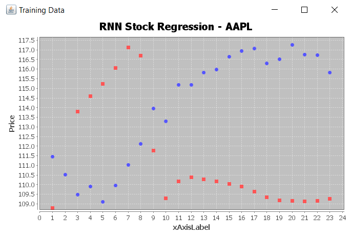

Scientific Truths Are Not Self-Evident.
This research project seeks to analyze the perception of science in culture.
Techniques from NLP such as word embeddings (word2vec) and sentiment analysis are used.
More specifically, this project is trying to exame what are the factors that affect the perception
of science in our culture, how have those factors evolved over the last half century (or so), and why?
Click here to see more.

An animation of a 3D word embedding projection.
Shifting Morals.
Shifting Morals is a thought experiment inspired by MIT's Moral Machine. However, instead of deterministic outcomes, Shifting Morals posits that outcomes are probabilistic and that everything is up to chance. The goal is to see how the introduction of chance influences morality.
With Shifting Morals, people can examine how chance plays a role in their decisions and how that influences their feelings about making choices.
Senior Independent Study Project.
My Senior Independent Study Project (SISP) revolves around learning Python, a high-level,
multi-paradigm, interpreted language. I learned Python more in-depth by focusing on
data science applications, primarily machine learning and deep learning. One example is
a deep neural network for classfying Higgs Boson data. View the repo
here. Another cool use of machine learning is something called semantic
hashing, wherein an autoencoder is able to hash information for quick lookup without prior manual sorting. You can see an example on
the right and the full code is
here.
I also made my first contribution to open source as a part of my project. I wrote a small Python wrapper for a C function based
around geospatial information files as a part of the Django web framework. You can see the Pull Request
here.
My code was released in Django version 2.0 in December 2017.
{kind=link}
{kind=link}
Quantum Algorithm for Square Root Convergence.
My project is based on creating a quantum algorithm for square root calculations. As a part of the this project, we were required to write a paper describing the different aspects of our project. My paper covers quantum mechanics, algorithmic efficiency, quantum logic and gates, and square root computation algorithms. I used a C library called Libquantum to simulate quantum mechanical interactions for my project. You can click the picture to read my paper.
Decisions: The College Finance Game
Apps for Good is a team-based project where students work together to create an app to solve a problem. My group created a game to teach good financial habits to students entering college. It runs on Android and is optimized for use on a tablet. You can see the source here.
{kind=link}
My team for Apps for Good and our poster.
Predicting Stock Prices With a RNN.
During junior year, John Ta and I created a recurrent neural network (RNN) in Java using DL4J to predict stock prices. The app has a fully functional UI that allows the user to input a stock, which is then used in an API developed by Quandl. That API returns a CSV file with stock prices, which is used as train/test data for the RNN and, lastly, the final predictions are displayed on a graph. View the source here (download the NeuralNet2.zip for the latest version).

{kind=link}
A graph of predictions on Apple stock. Note the scale of the y-axis and that the x-axis represents days. The blue dots represent our model's prediction and the red dots represent real data.